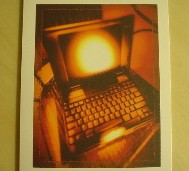
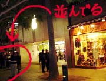
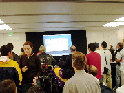

ESLクラスで，ハロウィンパーティと10月のバースディパーティが行われました．
バースディパーティといっても，ケーキの分配に優先権が付くという，ただそれだけですけどね．こちらのケーキは生クリームを口に含むと，砂糖がジャリジャリと音を立てるという凶悪な甘さなので，正直あまり欲しくありませんが，級友は僕が10月生まれということを知っているので口々に取りに行けと忠告してくれます．
仕方なく，にこにこ笑顔でケーキをゲット．日本人丸出し．
その後，PotLuckでみんなが持ち寄ったご飯をパクついていると，級友のMidiaがバースデーカードをくれました．誕生日が日曜日で，特に何もなく部屋で一人で過ごした，と言ったのが妙に可哀想に思えたのでしょうか．何にせよ，ありがたいことです．お礼を言ってさっそく開封しましたよ．

…ええと．職業とか趣味とかほとんど話してないと思うんですが．…どこでバレましたか？
休日だったので，日本でも公開が始まった「Kill Bill」を見に行きました．
実は科学博物館で見た「飛び出せ！スペースステーション(意訳．3D眼鏡付きだったので)」を除けば，こちらで普通に映画を見るのはこれが初めて．初めての映画がこんなんでいいんでしょうか．
ESL(英会話クラス)で学生証がもらえたので，これで学割が効くかなぁと思って窓口で訪ねたところ，ダメだと無下に断られました．まぁいいや．こちらの映画は$7ちょいなので，日本で見ることを考えれば全然問題ありません．
映画は，台詞の半分以上が日本語な上，「ココカラ英語で話シマス」とルーシー・リューが断りを入れてくれるので安心して見ることができました．内容は，なんというか，まぁ，人には積極的に勧められない映画ですよね．音楽は大変素晴らしい．「密室の恐怖実験」(口笛)のテーマが頭から離れません．
というわけで，それなりに満喫して帰宅しました．
帰ってから財布を確認したところ，$20札で代金支払ったはずなのに，おつりが$42ちょいほどありました．「学生割引がない」とは「割引どころではない」という意味でしたか．
今日はMacOSX10.3(Panther)の発売日．全世界同時発売ということで，アメリカ合衆国ではPM8:00からの発売となります．
週末で会社を早めに抜けられた上，なんだかそのまま家に帰っても仕方ないなぁと思っている内に，家とは反対方向へ車を走らせていました(確信犯)．「なんだこれは！車が勝手に！」と一人遊び(得意)をしているうちにSanta Monicaのアップルストアへ到着．おー，なんかみんな並んでますよ．

道行く人達は，物珍しいのか「これは一体何の行列だい？」と頻繁に話しかけてきます．僕も一度話しかけられましたし，僕のちょっと後ろの学生グループらしき集団では，
「へい，これは何の行列だい？」
「今日発売のPantherを待ってるのさ」
「わーお，それは最高にクールだね！…で，Pantherって何だい？」
というコントみたいなやり取りが行われていました．しかし，誰も彼も「新しいOS」だと聞くと「あ〜」と言いながら薄ら笑いを浮かべて去って行くのが印象的です．
定刻の8時になると，先頭では「いきなり開封→インストール」のコンボを決める集団も．アキバ系は世界の共通語！素晴らしい．

入店すると拍手で迎えられるので大層困惑しつつ，英語の聞き取りの練習と称してPantherデモを視聴．みんなExposéで拍手ですよ．デモしてる方も，今日の客は分かってる人ばかりだと知っているので「あーこのデモはいいや」とか気の抜けた感じでおもろかったです．
というわけでPanther購入後，早々に店を後にして帰宅．インストールして遊んでいたら朝の4時でした．ちょっとやりすぎた…．